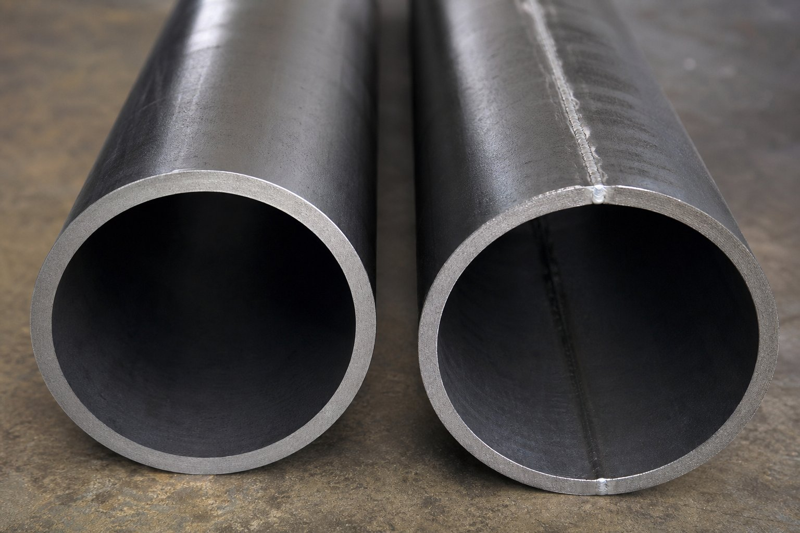

تفاوت در روش ساخت
لوله بدون درز از بیلت جامد و بدون هیچ جوشکاری طولی تولید میشود؛ نتیجه ساختاری یکپارچه با خواص یکنواخت است. لوله جوشی از ورق یا کویل شکل میگیرد و لبههای آن با جوشکاری به هم متصل میشوند؛ درز جوش ناحیهای با ریزساختار متفاوت است که باید با بازرسی کنترل شود.

جدول مقایسه جامع
| معیار | بدون درز | جوشی |
|---|---|---|
| یکنواختی خواص | کامل در سراسر محیط | وابسته به کیفیت درز |
| تحمل فشار | بالاتر در ضخامت مشابه | وابسته به بازرسی درز |
| محدوده سایز | معمولاً تا ۲۴ اینچ | تا قطرهای بسیار بزرگ |
| سطح داخلی | یکنواخت | بسته به روش ساخت |
| هزینه در قطر بزرگ | بسیار بالا یا غیرقابل دسترس | اقتصادی |
| زمان تحویل | معمولاً طولانیتر | معمولاً کوتاهتر |
عملکرد در فشار و سرویس حساس
- در سرویسهای پرفشار و حساس، بدون درز انتخاب مطمئنتر است.
- در سرویسهای حاوی هیدروژن یا سیکلهای حرارتی سنگین، یکنواختی بدون درز مزیت دارد.
- در خطوط عمومی با فشار متوسط، جوشی با بازرسی کامل درز کاملاً قابل قبول است.
- مرجع نهایی، الزامات کد پایپینگ و مدارک پروژه است.
اقتصاد انتخاب
در سایزهای کوچک و ضخامتهای سنگین، تفاوت قیمت کمتر است و بدون درز با توجه به حذف ریسک درز توجیه دارد. در قطرهای بزرگ، جوشی با بازرسی کامل تنها انتخاب منطقی است. تحلیل باید بر اساس سرویس، فشار و هزینه کل انجام شود.
راهنمای تصمیم سریع
- سرویس پرفشار یا حساس با سایز تا ۲۴ اینچ: بدون درز.
- خط عمومی با فشار متوسط و بازرسی کامل درز: جوشی.
- قطرهای بسیار بزرگ: جوشی با الزامات بازرسی سختگیرانه.
- در همه حالات، گواهی مواد و گزارش تست را درخواست کنید.
الزامات بازرسی لوله جوشی
- بازرسی غیرمخرب کامل درز جوش در کارخانه.
- کنترل پارامترهای جوش و صلاحیت روش.
- تست هیدرواستاتیک هر شاخه.
- ارزیابی ناحیه متأثر از حرارت در صورت الزام پروژه.
- درج نتایج بازرسی در مدارک تحویل.
نکات تحویل در سایت
- تطابق شماره ذوب شاخهها با گواهی مواد.
- بازرسی چشمی سطح و درز پیش از تخلیه.
- کنترل ضخامت نمونهای با ضخامتسنج.
- انبارش مناسب با تکیهگاه و درپوش.
- صورتجلسه تحویل با ذکر موارد نامنطبق.
جمعبندی
بین بدون درز و جوشی، «بهتر» مطلق وجود ندارد؛ انتخاب درست تابع سرویس، فشار و اقتصاد است. با ارائه شرایط پروژه، مناسبترین روش ساخت پیشنهاد میشود.
سوالات رایج
چرا لوله بدون درز تحمل فشار بهتری دارد؟
چون درز جوش، ناحیهای با ریزساختار متفاوت و نیازمند بازرسی ویژه است. در لوله بدون درز، خواص در سراسر محیط یکنواخت است و نقطه ضعف احتمالی درز حذف میشود.
چه زمانی لوله جوشی انتخاب میشود؟
در قطرهای بزرگ که تولید بدون درز محدود یا گران است، و در سرویسهایی که بازرسی کامل درز انجام و کیفیت آن تضمین میشود. برای خطوط عمومی با فشار متوسط، جوشی بازرسیشده کاملاً قابل قبول است.
چطور از کیفیت درز لوله جوشی مطمئن شویم؟
بازرسی غیرمخرب کامل درز در کارخانه، کنترل پارامترهای جوش و گواهی مواد و تست. ذکر الزامات بازرسی در سفارش، حق خریدار است.
آیا تفاوت قیمت همیشه زیاد است؟
در سایزهای کوچک و ضخامتهای سنگین تفاوت کمتر است؛ در قطرهای بزرگ، بدون درز بسیار گرانتر یا حتی غیرقابل دسترس است و جوشی انتخاب منطقی میشود.
مطالب مرتبط
- راهنمای جامع لوله مانیسمان
- مقایسه لوله جوشی مستقیم و مارپیچ
- راهنمای لولههای جوشی و بازرسی درز جوش
- راهنمای بازرسی درز جوش لولههای جوشی
- راهنمای لوله خط انتقال؛ سطوح مشخصه و گریدها
با ارائه سرویس، فشار و سایز، مناسبترین روش ساخت (بدون درز یا جوشی با بازرسی کامل) به همراه مدارک کامل پیشنهاد میشود.
مشاهده صفحه محصول ← ثبت RFQ همین محصولتامین این تجهیزات را به پیشرو تجهیز فرتاک بسپارید
شرکت پیشرو تجهیز فرتاک تامینکننده تخصصی تجهیزات صنعتی برای پروژههای نفت، گاز، پتروشیمی، فولاد و نیروگاهی است. برای دریافت پیشنهاد فنی و قیمت، استعلام (RFQ) خود را ثبت کنید تا کارشناسان مهندسی فروش در کوتاهترین زمان پاسخ دهند.
- تامین لوله صنعتیهر دو روش ساخت با گواهی مواد و تست
- تامین تجهیزات صنایع نفت و گازپکیج مواد مطابق مدارک پروژه